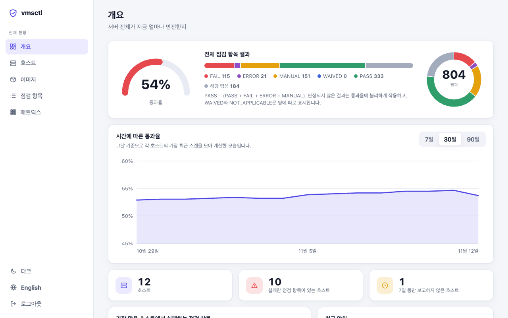
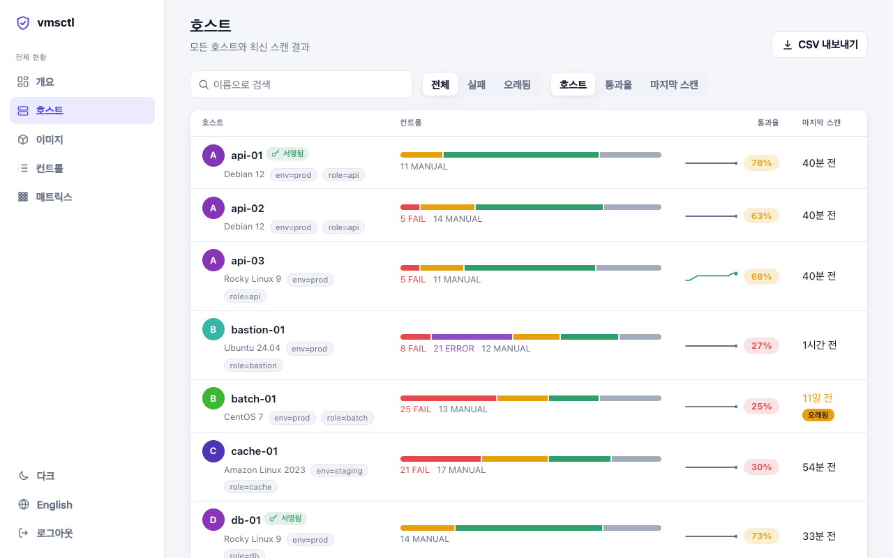
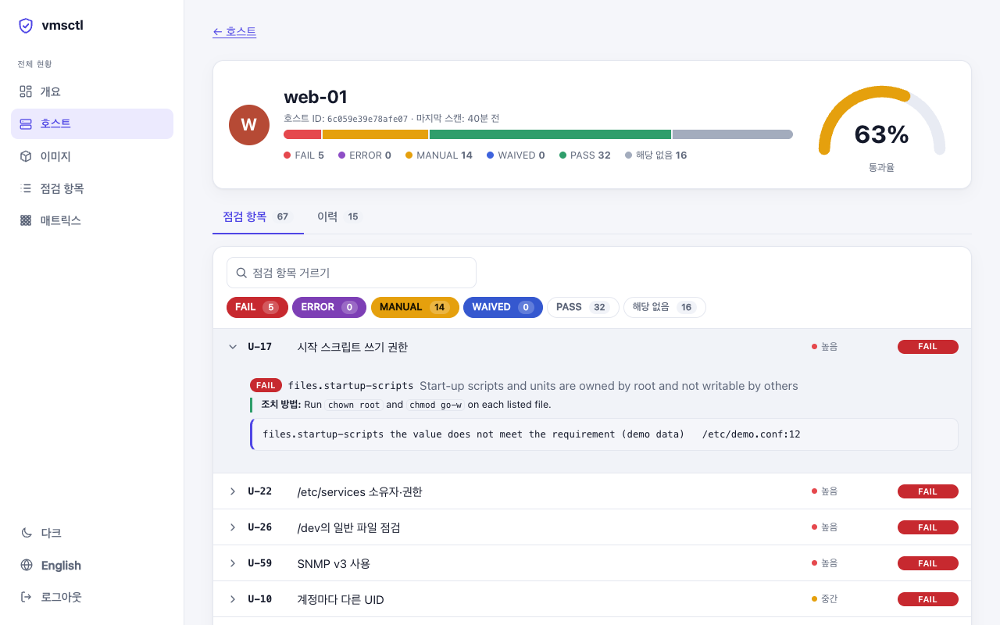
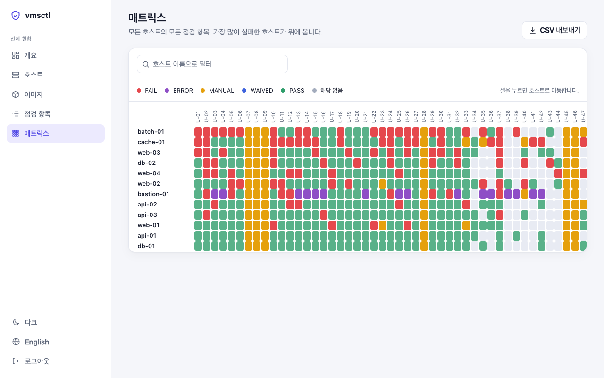
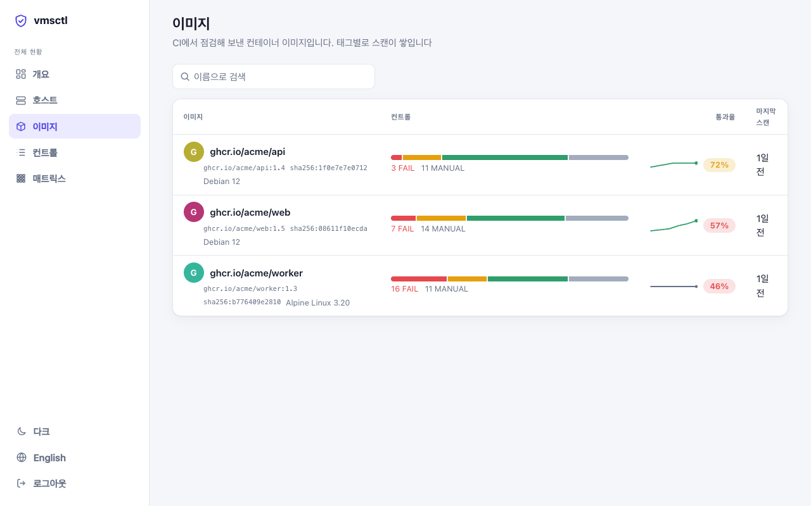

서버 취약점 점검을 코드 린트처럼
바이너리 하나가 서버의 보안 설정을 읽고 항목마다 결과를 냅니다. 모든 판정에는 근거로 값과 파일, 줄 번호가 붙습니다. 읽기만 하므로 서버는 전혀 바뀌지 않습니다.
$ docker run --rm -v /:/host:ro ghcr.io/with-developer/vmsctl:0.40.0 scan --root /host

확인할 수 있는 결과만 믿을 수 있습니다
대부분의 점검 도구는 판정만 알려 주고 이유는 직접 찾게 합니다. vmsctl은 반대로 만들었습니다.
모든 판정에 근거가 있습니다
어떤 값이 어느 파일 몇 번째 줄에서 나왔는지, 직접 설정한 값인지 기본값인지 보여 줍니다. 이유 없는 FAIL은 없습니다.
PASS를 추측하지 않습니다
읽을 수 없는 파일이나 중간에 끊긴 수집처럼 판단할 수 없는 항목은 ERROR나 MANUAL로 알립니다. 설정은 프로그램이 읽는 방식 그대로 읽습니다. PAM은 libpam처럼, login.defs는 shadow-utils처럼, 셸 파일은 bash처럼 해석합니다.
보기만 합니다
점검 규칙은 스크립트가 아니라 데이터라서 명령을 실행할 수 없습니다. 비밀번호 해시, 키, 토큰은 결과에 나오지 않습니다.
서버에서 실행하면 목록이 바로 나옵니다
root 권한으로 실행합니다. 첫 번째 프로파일은 KISA 주요정보통신기반시설 기술적 취약점 분석·평가 가이드 2026년판(Unix, U-01~U-67)이고, 다른 기준은 같은 점검 위에 프로파일로 더해 갑니다.
- 서버도, 이미지도. 실행 중인 시스템, 다른 곳에 마운트한 파일시스템,
docker save로 만든 컨테이너 이미지 아카이브를 점검합니다. - 출력 형식이 다양합니다. 표, JSON(스키마 제공), SARIF, JUnit, 여러 서버를 한 파일로 묶는 HTML 보고서.
- 사유를 남기는 예외. 안고 가기로 한 항목은
vmsctl.yaml에 만료일과 함께 적어 두고, 결과에는 근거가 그대로 남습니다.
$ sudo vmsctl scan vmsctl v0.40.0 · kisa-2026 · web-01 (Ubuntu 24.04) ✗ FAIL U-02 Password policy [high] ✗ accounts.password-min-length pam.password_quality.settings.minlen: not set ✗ FAIL U-12 Session timeout [low] ✗ accounts.session-timeout-set not set; expected a value matching [1-9][0-9]* ✗ FAIL U-18 Ownership and permissions of /etc/shadow [high] ✗ files.shadow-perms /etc/shadow: root:shadow 0640 — mode 0640 exceeds 0400 ? MANUAL U-23 Set-ID programs are reviewed [high] ? files.review-setid /usr/bin/chage 2755 root … and 10 more kisa-2026: 67 controls — 7 FAIL, 10 MANUAL, 29 PASS, 21 N/A
모든 서버를 한 화면에서
각 서버가 스스로 점검해 결과를 vmsctl server로 보냅니다. 서버는 이력을 쌓아 두고, 통과율의 변화, 가장 많이 실패하는 항목, 직전 점검보다 나빠진 항목, 그리고 결과마다 근거와 조치 방법을 보여 줍니다.

검색하고, 레이블로 거르고, 정렬합니다. 호스트마다 최근 결과와 추이선이 보입니다.

점검마다 근거와 실패한 항목의 조치 방법, 스캔 이력, 직전 스캔과의 비교를 볼 수 있습니다.

모든 호스트의 모든 점검 항목을 한 표로 봅니다. 가장 많이 실패한 호스트가 위에 옵니다.

CI가 점검한 컨테이너 이미지를 이미지마다 하나의 이력으로 모아 봅니다.
서버가 호스트에 접속하지 않습니다
결과는 호스트가 보냅니다. 대시보드에서 지금 바로 점검하고 싶은 서버는 vmsctl agent가 바깥으로 연결해 두고 “지금 스캔” 요청을 기다립니다. 요청할 수 있는 것은 그 호스트가 허용한 프로파일뿐입니다.
서명된 결과
호스트가 결과에 서명하면, 나중에 서버가 침해당해도 그 호스트가 무엇을 보고했는지 증거로 남습니다. 서버는 해시로 이어진 감사 기록도 보관합니다.
호스트 없이 먼저 써 보기
브라우저에서 라이브 데모를 열거나, vmsctl server demo를 실행해 보세요. 가상의 호스트 12대가 담긴 서버가 뜨고, 로그인에 쓸 토큰을 알려 줍니다. 한국어와 영어, 라이트와 다크를 지원합니다. 모든 점검이 무엇을 보고, 왜 중요하고, 어떻게 고치는지도 한국어로 설명합니다.
배포하기 전에 이미지를 점검하세요
vmsctl scan --image-tar는 데몬도 레지스트리도 없이 docker save나 OCI 아카이브를 읽고, 그 이미지로 띄운 컨테이너 안에서 점검한 것과 같은 결과를 냅니다. 이 저장소는 GitHub Action이기도 해서, 검증된 릴리스를 설치하고 SARIF를 코드 스캐닝에 올리며 정해 둔 심각도 이상이면 빌드를 실패시킵니다.
# 어느 CI에서든 docker save app:1.4 -o app.tar vmsctl scan --image-tar app.tar --fail-on high # GitHub Actions - uses: with-developer/vmsctl@v0.40.0 with: image: app:ci fail-on: high sarif-file: vmsctl.sarif
지원하는 시스템
아래 배포판은 모두 프로젝트의 테스트에서 Docker로 기본 상태와 보안 강화 상태를 점검합니다.
세 단계로 시작하세요
릴리스는 Sigstore로 서명하고, 빌드 출처 증명과 SBOM을 함께 제공합니다.
설치
설치 스크립트를 내려받아 내용을 읽어 본 뒤 실행하세요. 아카이브의 SHA-256을 확인하고, cosign이 설치되어 있으면 서명도 확인합니다.
curl -fsSLO https://raw.githubusercontent.com/with-developer/vmsctl/v0.40.0/install.sh sudo sh install.sh -v v0.40.0
릴리스의 .deb·.rpm 패키지, 컨테이너 이미지, go install github.com/with-developer/vmsctl/cmd/vmsctl@v0.40.0로도 설치할 수 있습니다.
점검
서버 한 대는 보고서 하나로 끝납니다. 여러 대는 JSON으로 저장해 두었다가 HTML 보고서 하나로 묶으세요.
sudo vmsctl scan sudo vmsctl scan --format json --output web-01.json vmsctl report *.json --output report.html
서버 전체 보기
먼저 데모로 둘러보고, 마음에 들면 직접 서버를 띄워 각 호스트에서 결과를 보내세요.
vmsctl server demo
# 이어서: sudo VMSCTL_TOKEN=hlt_ing_... vmsctl scan --push https://vmsctl.example.org:8443